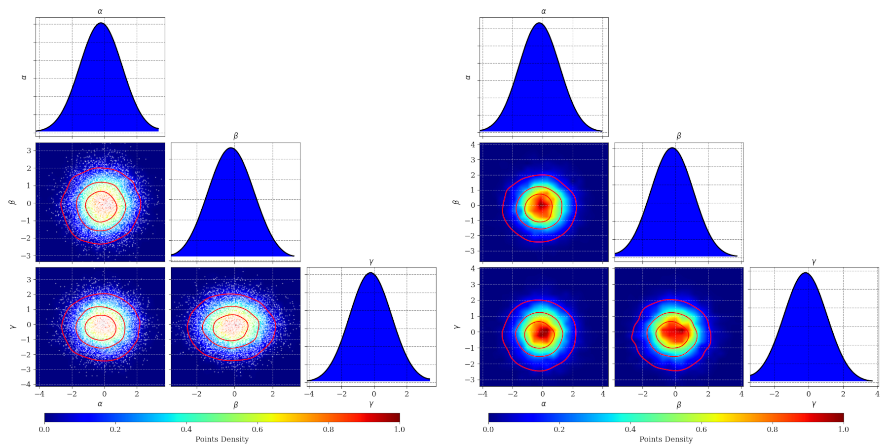
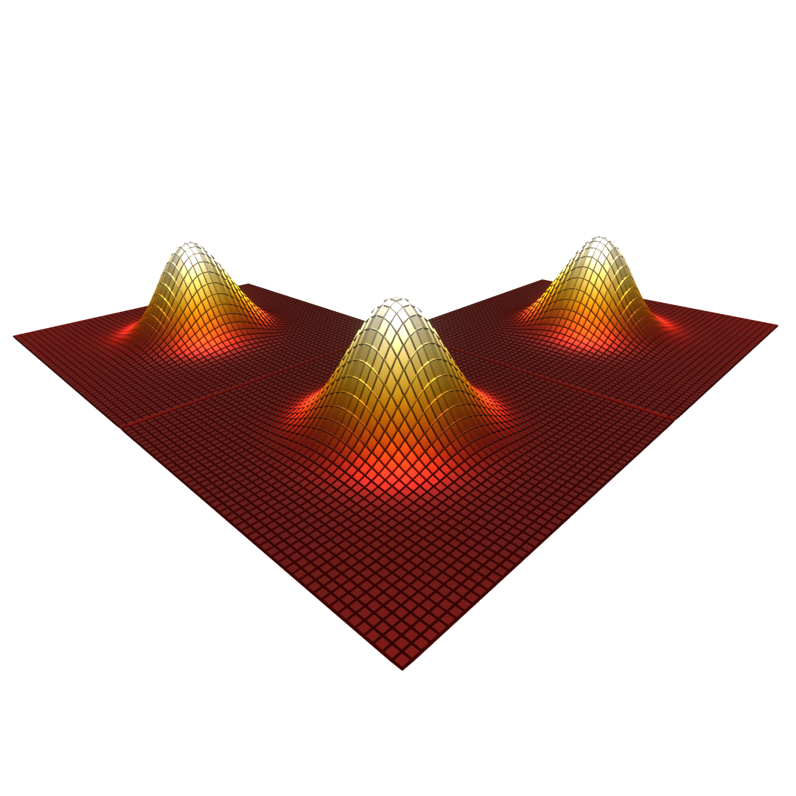

ColorCorner Software¶
This is a software based on corner.py (https://corner.readthedocs.io/en/latest/) for 2d plots switched to color map [0,1] (including CL contours and scatter points) and 1d histograms switched to smooth density curves.
plot_scatter=True (left) , plot_scatter=False (right)
Installation¶
Here is the console command:
$ pip install colorcorner
Usage [example]¶
import numpy as np
import matplotlib.pyplot as plt
import colorcorner.colorcorner as cc
x = np.random.normal(0,1,10000)
y = np.random.normal(0,1,10000)
z = np.random.normal(0,1,10000)
labels = ['$\\alpha', '$\\beta$', '$\gamma$']
fig = cc.plot(
np.transpose([x,y,z]),
smooth1d=2,
color1d='b',
labels=labels,
cmap='jet',
CL=[30,60,90], # confidence levels of 30%, 60% and 90%
CL_color='r', # color of the CL curves
plot_scatter=True,
scatter_color='w'
)
plt.show()
API¶
License¶
MIT License
